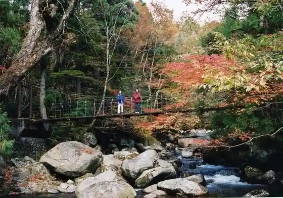
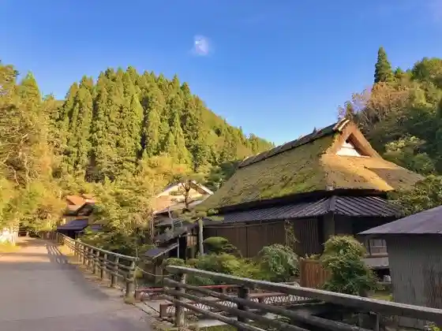
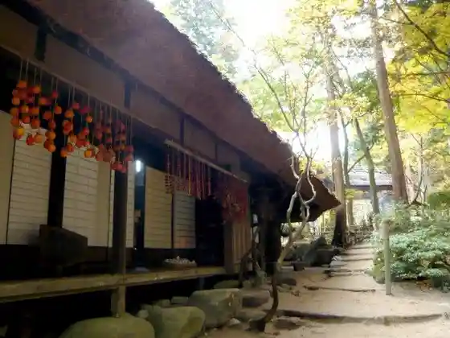
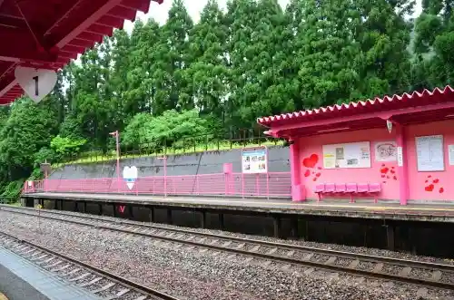

Chizu Yado
Chizu, Tottori · 0858-76-1111 · Official / source link
Roshin Kei
Chizu, Tottori · 0858-76-1111 · Official / source link

Itai Hara Shuraku
Chizu, Tottori · 0858-76-1111 · Official / source link

Yamazato Ryori Mitaki Sono
Chizu, Tottori · 0858-75-3665 · Official / source link

Koi Yamagataeki (Chizu Kyuko)
Chizu, Tottori · 0858-75-6600 · Official / source link

Ishigaya Ie House
Chizu, Tottori · 0858-75-3500 · Official / source link
Chizu Sakura Dote
Chizu, Tottori · 0858-76-1111 · Official / source link
Shinrin Serapii ® Experience
Chizu, Tottori · 0858-75-4113 · Official / source link
Suwa Shrine
Chizu, Tottori · 0858-76-1111 · Official / source link
Nagi Yama
Chizu, Tottori · 0858-76-1111 · Official / source link
Aizen Experience
Chizu, Tottori · 0858-75-3630 · Official / source link
Chizu Yado Streetscape Sansaku
Chizu, Tottori · 0858-76-1111 · Official / source link
Sugi Shrine
Chizu, Tottori · 0858-76-1111 · Official / source link
Suwa Izumi
Chizu, Tottori · 0858-75-0618 · Official / source link
Chizu Town Hall
Chizu, Tottori · 0858-75-4111 · Official / source link